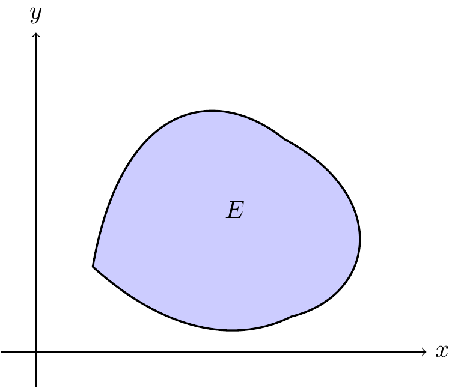
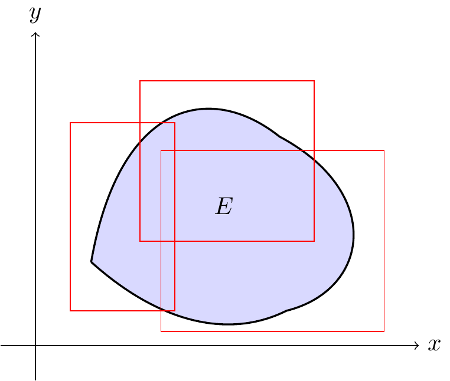

Chapter 10 Important Results
Theorem 10.1 (Montel Theorem) Every locally bounded family of analytic functions is normal.
Proof. .jpg)
.jpg)
Theorem 10.2 Let \(D\) and \(\Delta\) be disjoint domains with a common rectifiable boundary arc \(\Gamma\). Let \(f\) be analytic in \(D\) and continuous in \(D \cup \Gamma\), and let \(g\) be analytic in \(\Delta\) and continuous in \(\Delta \cup \Gamma\). Suppose \(f(z) = g(z)\) for all \(z \in \Gamma\). Then \(f\) has an analytic continuation \(F\) to \(D \cup \Gamma \cup \Delta\) with \(F(z) = g(z)\) in \(\Delta\).
Proof.
It must be shown that the function \(F\) defined as above is actually analytic on \(\Gamma\). Given a point \(z_{0} \in \Gamma\), choose Jordan arcs \(C_{1} \subset D\) and \(C_{2} \subset \Delta\) with common endpoints on \(\Gamma\) whose union \(C = C_{1} \cup C_{2}\) is a Jordan curve enclosing \(z_{0}\). Let \(\gamma\) be the subarc of \(\Gamma\) inside \(C\). Let \(D^{*}\) and \(\Delta^{*}\) be the subdomains of \(D\) and \(\Delta\) enclosed by the Jordan curves \(J_{1} = C_{1} \cup \gamma\) and \(J_{2} = C_{2} \cup (-\gamma)\), respectively.

By the extended version of Cauchy’s theorem,
\[ \frac{1}{2\pi i} \int_{J_{1}} \frac{f(\zeta)}{\zeta - z}\, d\zeta = \begin{cases} f(z), & z \in D^{*},\\[6pt] 0, & z \in \Delta^{*}. \end{cases} \]
Similarly,
\[ \frac{1}{2\pi i} \int_{J_{2}} \frac{g(\zeta)}{\zeta - z}\, d\zeta = \begin{cases} 0, & z \in D^{*},\\[6pt] g(z), & z \in \Delta^{*}. \end{cases} \]
For \(f(z)\): \[\begin{equation} \frac{1}{2\pi i} \int_{J_1} \frac{f(\zeta)}{\zeta - z} d\zeta = \frac{1}{2\pi i} \left( \int_{C_1} \frac{f(\zeta)}{\zeta - z} d\zeta + \int_{\gamma} \frac{f(\zeta)}{\zeta - z} d\zeta \right) \tag{10.1} \end{equation}\]
For \(g(z)\):
\[\begin{equation} \frac{1}{2\pi i} \int_{J_2} \frac{g(\zeta)}{\zeta - z} d\zeta = \frac{1}{2\pi i} \left( \int_{C_2} \frac{g(\zeta)}{\zeta - z} d\zeta + \int_{-\gamma} \frac{g(\zeta)}{\zeta - z} d\zeta \right) \tag{10.2} \end{equation}\]
\[\begin{eqnarray*} & & \frac{1}{2\pi i} \left( \int_{J_1} \frac{f(\xi)}{(\xi - z)} \, d\xi + \int_{J_2} \frac{g(\xi)}{(\xi - z)} \, d\xi \right) \\ & = & \frac{1}{2\pi i} \left( \int_{C_1} \frac{f(\xi)}{(\xi - z)} \, d\xi + \int_{\gamma} \frac{f(\xi)}{(\xi - z)} \, d\xi + \int_{C_2} \frac{g(\xi)}{(\xi - z)} \, d\xi + \int_{-\gamma} \frac{g(\xi)}{(\xi - z)} \, d\xi \right) \\ & = & \frac{1}{2\pi i} \left( \int_{C_1} \frac{f(\xi)}{(\xi - z)} \, d\xi + \int_{C_2} \frac{g(\xi)}{(\xi - z)} \, d\xi + \int_{\gamma} \frac{f(\xi)}{(\xi - z)} \, d\xi - \int_{\gamma} \frac{g(\xi)}{(\xi - z)} \, d\xi \right) \quad \left( \because \int_{-\gamma} d\xi = -\int_{\gamma} d\xi \right) \\ & = & \frac{1}{2\pi i} \left( \int_{C_1} \frac{f(\xi)}{(\xi - z)} \, d\xi + \int_{C_2} \frac{g(\xi)}{(\xi - z)} \, d\xi + \int_{\gamma} \frac{f(\xi)}{(\xi - z)} \, d\xi - \int_{\gamma} \frac{f(\xi)}{(\xi - z)} \, d\xi \right) \quad \left( \because f(\xi) = g(\xi) \text{ on } \gamma \right) \\ & = & \frac{1}{2\pi i} \left( \int_{C_1} \frac{f(\xi)}{(\xi - z)} \, d\xi + \int_{C_2} \frac{g(\xi)}{(\xi - z)} \, d\xi \right) \\ & = & \frac{1}{2\pi i} \int_{C} \frac{F(\xi)}{(\xi - z)} \, d\xi \quad \left( \because \begin{array}{ll} F(\xi) = f(\xi) & \text{on } C_1 \\ F(\xi) = g(\xi) & \text{on } C_2 \\ C_1 \cup C_2 = C & \end{array} \right) \\ & = & F(\xi)\quad \text{ for } z \in D^* \cup \Delta^*. \end{eqnarray*}\]
But this last integral is analytic throughout the domain \(D^* \cup \gamma \cup \Delta^*\) bounded by \(C\). In particular, \(F\) is analytic at \(z_0\). Since \(z_0\) was an arbitrary point of \(\Gamma\), this proves the theorem.
Theorem 10.3 If a function \(u\) is continuous and has the local ```

Theorem 10.4 If a function \(u\) is continuous and has the local sub-mean-value property in a domain \(D\), then \(u\) ```

Corollary 10.1 A subharmonic function which is not identically constant cannot have a local maximum at an interior point.
Proof.

Proposition 10.1 The sum of two subharmonic functions is subharmonic.
Proof.

Proposition 10.2 If \(u\) and \(v\) are sub harmonic, then \(w(z) = \max\{u(z), v(z)\}\) is subharmonic.
Proof.

Proposition 10.3 Let \(u\) be subharmonic on a domain \(\Omega\), and let \(\varphi : \mathbb{R} \to \mathbb{R}\) be a convex and nondecreasing function. Then \(w(z) = \varphi(u(z)).\) is subharmonic.
Proof.

Proposition 10.4 If \(u\) is harmonic on a domain \(\Omega\), then \(|u|^{p}\) is subharmonic on \(\Omega\) for every \(p \ge 1\).
Proof.

Proposition 10.5 If \(g\) is analytic, then \(\Re(g)\) and \(\Im(g)\) are harmonic.
Proof.

Proposition 10.6 Let \(f\) be analytic on a domain \(\Omega\). Then \(\log |f|\) is harmonic on \(\Omega \setminus f^{-1}(0)\), and for every \(p>0\) the function \(|f|^{p}\) is subharmonic on \(\Omega\).
Proof.

Proposition 10.7 A function is subharmonic if it satisfies the sub-mean-value inequality and is upper semicontinuous, even if it takes the value \(−\infty\).
In a region where \(f\) has zeros, \(\log| f(z)|\) is subharmonic in a generalized sense which allows the
- \(\log|f|\) is harmonic where \(f\neq 0\),
- \(\log|f|\) is allowed to be \(-\infty\) at zeros,
- and it satisfies the sub-mean inequality everywhere.
This is why we can still apply the convex-function principle to conclude:
\[ |f(z)|^{p} = e^{p\log|f(z)|} \]
is subharmonic for every \(p>0\).
10.1 \(n\)-Dimensional Lebesgue Measure Theory
Since I am familiar with \(n\)-dimensional measure theory, I will go through the following steps.
Definition 10.1 The \(n\)-dimensional Lebesgue outer measure of a set \(E \subset \mathbb{R}^n\) is
\[m_n^*(E) = \inf \left\{ \sum_{k=1}^{\infty} \operatorname{vol}_n(R_k) : E \subset \bigcup_{k=1}^{\infty} R_k \right\},\]
where the \(R_k\) are \(n\)-dimensional rectangles (boxes)
\[R_k = [a_1,b_1] \times \cdots \times [a_n,b_n].\]
Their \(n\)-dimensional volume is
\[\operatorname{vol}_n(R_k) = \prod_{j=1}^{n}(b_j-a_j).\]
For measurable sets, the \(n\)-dimensional Lebesgue measure is
\[m_n(E) = m_n^*(E).\]
10.1.1 Interpretation by Dimension
| Space | Lebesgue measure |
|---|---|
| \(\mathbb{R}\) | length |
| \(\mathbb{R}^2\) | area |
| \(\mathbb{R}^3\) | volume |
| \(\mathbb{R}^n\) | \(n\)-dimensional volume |
Example 10.1
| Dimension \(n\) | Set | Measure | Interpretation |
|---|---|---|---|
| 1 | \([0,1]\) | \(m_1([0,1]) = 1\) | Length |
| 2 | Unit disk | \(m_2(\text{unit disk}) = \pi\) | Area |
| 3 | Unit ball | \(m_3(\text{unit ball}) = \frac{4\pi}{3}\) | Volume |
Table 1: Examples of Lebesgue measure in different dimensions.
10.1.2 Lower-dimensional sets have measure zero
A useful rule is:
A \(k\)-dimensional object inside \(\mathbb{R}^n\) has \(n\)-dimensional measure zero whenever \(k < n\).
Example 10.2
In \(\mathbb{R}^2\):
- A line segment \([-2,2] \times \{0\}\) has \(m_2 = 0\). It has length, but no area.
In \(\mathbb{R}^3\):
- A line has \(m_3 = 0\).
- A plane has \(m_3 = 0\).
They are too thin to have volume.
In \(\mathbb{R}^n\):
- Any smooth curve or surface has \(m_n = 0\) unless its dimension is actually \(n\).
10.1.3 Visualizing Lebesgue Measure and Rectangle Covers

Figure 10.1: An irregular measurable set \(E\subset\mathbb{R}^2\). Its Lebesgue measure \(m_2(E)\) is the area of the shaded region.

Figure 10.2: An open cover covering the set \(E\).
Then
\[\sum_{k=1}^{3}\operatorname{vol}_2(R_k) = \operatorname{vol}_2(R_1) + \operatorname{vol}_2(R_2) + \operatorname{vol}_2(R_3)\]
is the total area of the three rectangles covering \(E\). Taking the infimum over all possible countable rectangle coverings gives
\[m_2(E) = \inf \left\{ \sum_{k=1}^{\infty}\operatorname{vol}_2(R_k) : E \subset \bigcup_{k=1}^{\infty} R_k \right\}.\]
Thus \(m_2(E)\) is the smallest total covering area achievable, and this construction defines the \(2\)-dimensional Lebesgue measure.